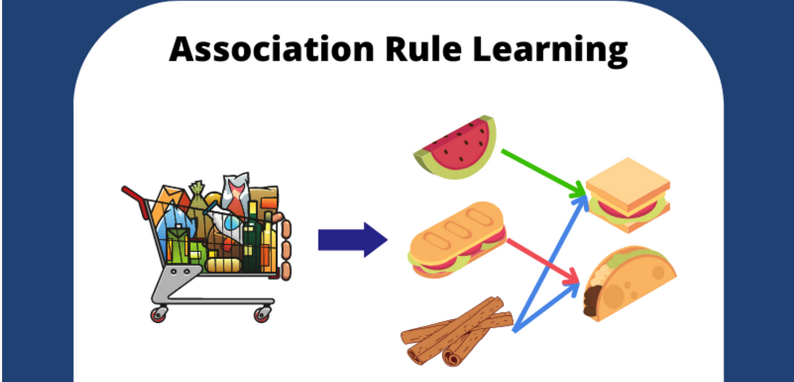

Association Rule Mining and Its Applications: Uncovering Hidden Patterns

Introduction
In the world of data mining, one of the most powerful techniques is Association Rule Mining. It allows businesses and researchers to identify relationships between variables in large datasets. Commonly used in market basket analysis, this technique helps uncover patterns that can lead to smarter decisions. In this blog, we will explore the concept of association rule mining, how it works, and its practical applications.
What is Association Rule Mining?
Association Rule Mining is a data mining technique used to find interesting relationships (associations) between different items in a dataset. The goal is to identify sets of items that frequently co-occur together. This technique is particularly useful for uncovering hidden patterns and insights that are not immediately obvious.
Key Components of Association Rules
- Antecedent (LHS): The item or set of items found in the rule’s left-hand side.
- Consequent (RHS): The item or set of items found in the rule’s right-hand side.
Measuring Association Rules
- Support: The frequency with which an item appears in the dataset.
- Confidence: The likelihood that the consequent happens when the antecedent occurs.
- Lift: The increase in the probability of the consequent occurring when the antecedent occurs, relative to its probability without the antecedent.
How Does Association Rule Mining Work?
- Frequent Itemset Generation: Identify itemsets that appear frequently in the dataset (based on a minimum support threshold).
- Rule Generation: From the frequent itemsets, generate rules that meet the minimum confidence threshold.
- Rule Evaluation: Evaluate and rank the generated rules based on metrics like support, confidence, and lift.
Applications of Association Rule Mining
- Market Basket Analysis: Retailers use association rule mining to uncover purchase patterns and optimize inventory.
- Cross-Selling and Upselling: E-commerce platforms use association rule mining to recommend complementary or higher-value products.
- Fraud Detection: Financial institutions detect fraudulent activities by analyzing transaction patterns.
- Healthcare: Medical records can reveal relationships between symptoms, diseases, and treatments, helping with early interventions.
- Telecommunications: Telecom companies use association rules to create targeted marketing campaigns and loyalty programs.
Challenges in Association Rule Mining
- Scalability: As datasets grow, the number of potential itemsets increases exponentially.
- Interpretability: Association rules may be difficult to interpret in large, complex datasets.
- Data Sparsity: Sparse data leads to fewer frequent itemsets and less meaningful rules.
- Overfitting: Setting thresholds too low may generate irrelevant or overly specific rules.
Conclusion
Association rule mining is a powerful tool for discovering hidden patterns and relationships in data. By understanding how different items or events are related, businesses can make more informed decisions, improve customer experiences, and increase profitability. Despite some challenges, the applications of association rule mining are vast and continue to transform industries like retail, finance, healthcare, and more.
Read More